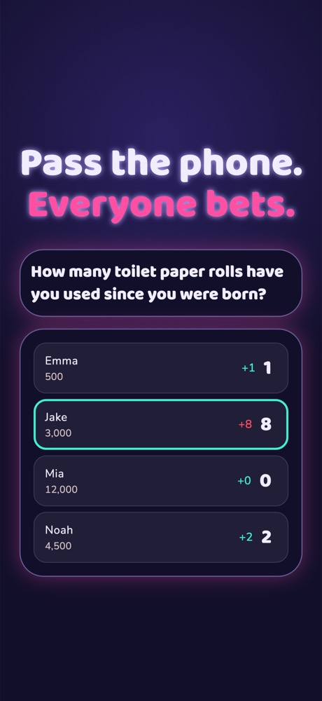
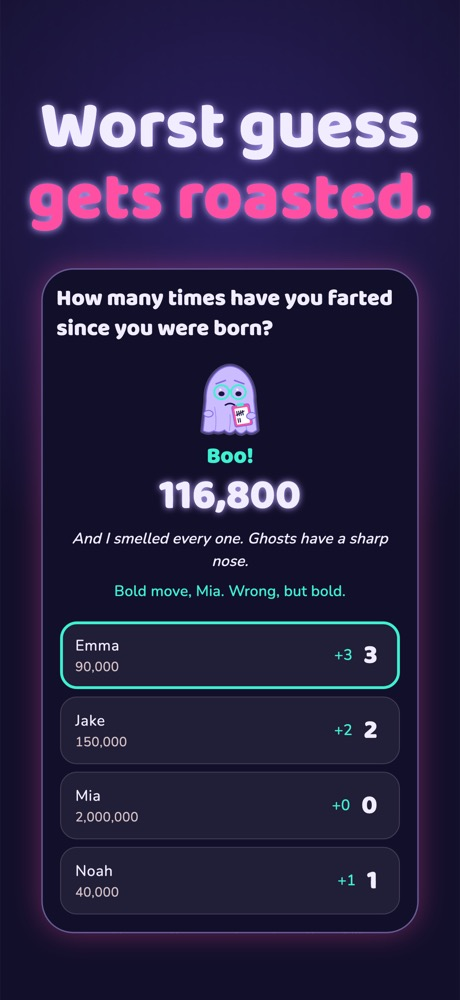

Norbert
あなたの人生を統計にするオバケ。
Norbert はメガネをかけたオタクなオバケ。生まれた日からクリップボードを手にあなたについて回り、すべてを数えてきました。トイレットペーパーのロール数、歩いた距離、流した汗の量まで。
スマホを回して、自分のことを少し入力し、数字を予想して賭けます。そしてNorbert が答えを発表し、いちばん外した人をからかいます。
統計は英語・フランス語・イタリア語・ドイツ語・スペイン語・ポルトガル語で遊べます。日本語には未対応です。
App Storeダウンロード
Google Play近日公開
スクリーンショット






遊び方
1. Norbert に教える
年齢や体重など1〜2個の情報を入力すると、結果があなた専用になります。聞かれたくない？別の統計にスキップできます。
2. 予想する
順番に、ほかの人の答えを見ずに数字を予想して入力します。
3. ばあ！
Norbert が答えと、規模がわかる比較と、いちばん外した人へのツッコミを持って登場します。
得点
自分より遠かったプレイヤー1人につき1点。ほぼピッタリならボーナス：
誤差10%以内 · +2
誤差1%以内 · +5
自由にカスタマイズ
1台のスマホで2〜8人、5・10・15ラウンド。中断したゲームは後から再開できます。
あなたについての101の統計
人生まるごとから、いま体の中で起きていることまで。伸びた髪、まばたき、心拍数、食べたピザ…。それっぽい数字と、くだらない質問。
広告なし、トラッキングなし
Norbert は無料。アカウント不要、広告なし、アプリ内課金なし、トラッキングなし。完全オフラインで動作し、Norbert に教えたことはスマホから出ません。
気に入っていただけたら、コーヒー1杯分の応援が続ける力になります。
コーヒーをおごるクレジット
- デザインとコード
- Jeff · Two Pins Studio
- 使用技術
- Flutter